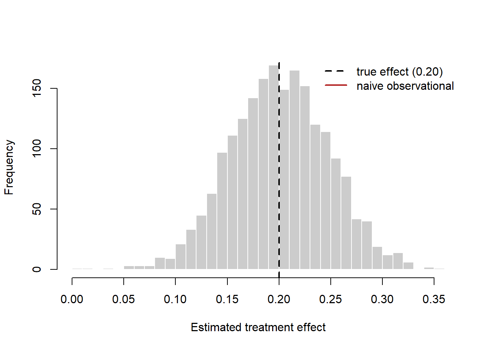
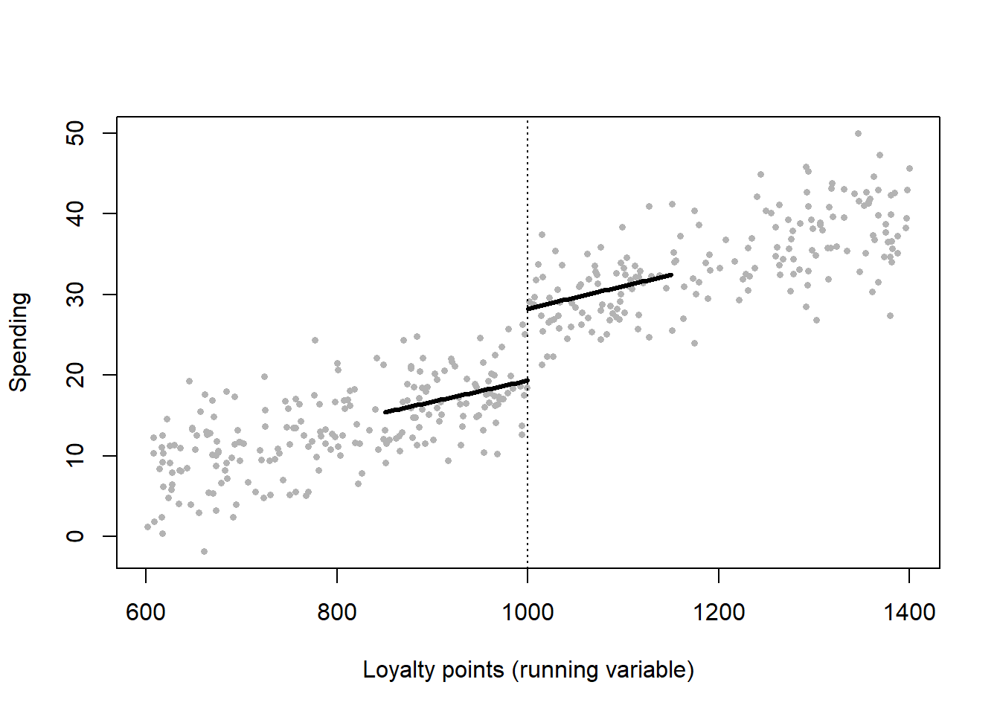
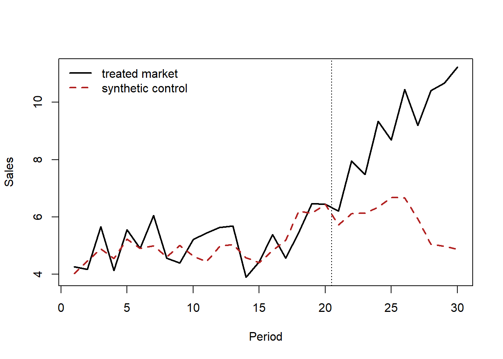

flowchart TD
A["<b>Randomized experiment / A-B test</b><br/>assignment independent of potential outcomes<br/>[ATE, by design]"]
B["<b>Regression discontinuity</b><br/>treatment jumps at a known cutoff<br/>[local ATE at the cutoff]"]
C["<b>Instrumental variables</b><br/>an exogenous shifter of treatment<br/>[LATE: effect on compliers]"]
D["<b>Difference-in-differences</b><br/>parallel trends absent treatment<br/>[ATT]"]
E["<b>Synthetic control</b><br/>weighted donors reproduce the counterfactual<br/>[ATT for one treated unit]"]
A --> B --> C --> D --> E
style A fill:#1b7837,color:#fff
style B fill:#5aae61,color:#fff
style C fill:#a6dba0,color:#000
style D fill:#d9f0d3,color:#000
style E fill:#f7f7f7,color:#000
37 Causal Inference and Field Experiments
Marketing decisions are causal claims in disguise. “Spend another dollar on search advertising and we will earn three” is a statement about a counterfactual world that did not happen—the sales the firm would have realized had it not spent the dollar. A correlation between advertising and sales, however precisely estimated, does not license that statement, because the firm chose how much to advertise, and it chose to advertise more precisely where and when it expected to sell more. The gap between what we measure (an association in observational data) and what we want to know (the effect of an intervention we control) is the central problem of this chapter, and of empirical marketing more broadly.
This chapter develops the modern toolkit for closing that gap. It begins with the potential-outcomes framework, the language in which a causal effect is defined before any estimator is chosen, and shows why the naive comparison of treated and untreated units is biased by selection. It then treats randomized experiments and online A/B tests as the benchmark that solves selection by design, and the four leading quasi-experimental designs—difference-in-differences (DiD), instrumental variables (IV), regression discontinuity (RD), and the synthetic control method (SCM)—as strategies for recovering causal effects when randomization is infeasible. Each method is presented the same way: the intuition first, then the estimator, then the identifying assumptions, and—most important—what breaks identification and how a reader can tell. Throughout, the running applications are the two domains where causal inference has reshaped marketing practice: advertising measurement and pricing.
The stakes are not academic. A decade of large-scale field experiments has shown that observational and even quasi-experimental estimates of advertising’s return can be off not by a few percent but by an order of magnitude, and sometimes carry the wrong sign (Lewis and Rao 2015; Gordon et al. 2019). A marketing scientist who cannot distinguish a credible causal estimate from an incredible one is a liability to the firm. By the end of this chapter the reader will be able to state the estimand, choose a design, defend its assumptions, implement the estimator in R, and diagnose the most common failures.
37.1 Semester arc
This chapter is organized as a fourteen-week doctoral seminar in causal inference and field experiments, tuned to quantitative-marketing applications—advertising measurement, pricing, promotions, and digital/platform experimentation. The arc matches how the topic is taught in the empirical track of top programs (MIT, Chicago Booth, Stanford GSB, Berkeley, Wharton, Columbia, Kellogg, NYU Stern, and the economics and statistics departments marketing students cross-register into). The single organizing question is what makes the treatment as-good-as-randomly assigned, conditional on what we observe and how we designed the study?
The first third establishes the framework (potential outcomes and the assignment mechanism), the gold standard (randomized experiments and large-scale A/B testing), and the realistic case where randomization is absent (selection on observables, and why regression is not magic). The ordering is deliberate: students internalize the experimental ideal before judging how far an observational design falls short of it. The middle third is a tour of quasi-experimental designs, each motivated by a different source of as-good-as-random variation: instrumental variables, difference-in-differences, regression discontinuity, synthetic control, panel/event-study methods, and matching/weighting. A recurring theme is that the past decade re-litigated the workhorses—most dramatically the two-way fixed-effects DiD estimator, long the default, shown to be badly biased under staggered adoption and heterogeneous effects. The seminar treats this episode as the field’s central methodological cautionary tale: a method can be standard, published thousands of times, and still wrong. The final third turns to the machine-learning and marketing-platform frontier: ML for heterogeneous treatment effects; advertising measurement when effects are tiny relative to sales noise; the experimental designs platforms actually use (ghost ads, PSA holdouts, geo experiments); incrementality, pricing, and targeting-policy evaluation; and the interference/spillover problems that break SUTVA in marketplaces and social networks. The course closes on the question every marketing dissertation must answer: given that the effect is real but small and the platform is non-stationary, what is the credible research design, and can it scale?
The standing textbooks for the whole course are Imbens and Rubin’s Causal Inference for Statistics, Social, and Biomedical Sciences (Cambridge, 2015, the potential-outcomes spine), Angrist and Pischke’s Mostly Harmless Econometrics (Princeton, 2009, the applied quasi-experimental workhorse), Cunningham’s Causal Inference: The Mixtape (Yale, 2021, a modern code-forward synthesis), and Wooldridge’s Econometric Analysis of Cross Section and Panel Data, 2nd ed. (MIT, 2010, the panel/fixed-effects reference). Each weekly module below names its topic, subtopics, methods, key readings (with DOI links and a one-line rationale; foundational works are marked [F], frontier works [R]), and central debate. The detailed derivations, R simulations, and worked marketing examples that follow the weekly map—the potential-outcomes algebra, the A/B-power simulation, the DiD/IV/RD/SCM code, and the design-comparison table—are the seminar’s lab sessions; they are kept intact and cross-referenced from the weeks they support.
37.1.1 Week 1 — Potential Outcomes and the Assignment Mechanism
Topic. [F] The Neyman–Rubin potential-outcomes model as the language in which a causal effect is defined before any estimator is chosen.
Subtopics. The fundamental problem of causal inference; SUTVA; the estimands (ATE, ATT, CATE); the assignment mechanism as the central object; “no causation without manipulation”; causal versus predictive questions.
Methods. Writing an estimand precisely; distinguishing estimand / identification / estimation / inference; recognizing when a question is causal versus descriptive. Worked algebra in Section 37.2 below.
Key readings.
- Rubin, D. B. (1974). “Estimating Causal Effects of Treatments in Randomized and Nonrandomized Studies.” Journal of Educational Psychology 66(5), 688–701. doi:10.1037/h0037350 — [F] the founding statement of the potential-outcomes framework.
- Holland, P. W. (1986). “Statistics and Causal Inference.” Journal of the American Statistical Association 81(396), 945–960. doi:10.1080/01621459.1986.10478354 — [F] formalizes the framework and the “no causation without manipulation” doctrine; the field’s conceptual touchstone.
- Imbens, G. W. & Rubin, D. B. (2015). Causal Inference for Statistics, Social, and Biomedical Sciences, Part I. Cambridge University Press (book) — [F] potential outcomes and the assignment mechanism, in book length.
Debate. Is “manipulation” required for causality (what of immutable characteristics)? ATE versus ATT versus policy-relevant estimands; design-based versus model-based inference.
37.1.2 Week 2 — Randomized Experiments and A/B Testing at Scale
Topic. [F]→[R] Randomization as the assignment mechanism that identifies the ATE, scaled up to industrial web experimentation.
Subtopics. Fisher’s sharp null and randomization inference versus Neyman’s repeated-sampling inference; covariate balance, stratification, and blocking; CUPED-style variance reduction; the engineering of web experimentation, sample-ratio mismatch, peeking/optional stopping, and the experimentation platform as an organizational artifact.
Methods. Running Fisherian permutation tests; computing Neyman variance; designing stratified/clustered assignment; variance reduction; diagnosing sample-ratio mismatch. Lab: the A/B-power simulation in Section 37.3 below (Figure 37.2).
Key readings.
- Kohavi, R., Longbotham, R., Sommerfield, D. & Henne, R. M. (2009). “Controlled Experiments on the Web: Survey and Practical Guide.” Data Mining and Knowledge Discovery 18(1), 140–181. doi:10.1007/s10618-008-0114-1 — [R] the practitioner canon for industrial-scale A/B testing; the pitfalls students will actually hit.
- Bojinov, I. & Shephard, N. (2019). “Time Series Experiments and Causal Estimands: Exact Randomization Tests and Trading.” Journal of the American Statistical Association 114(528), 1665–1682. doi:10.1080/01621459.2018.1527225 — [R] extends design-based randomization inference to single-unit, switchback-style time-series experiments (directly relevant to one-market pricing/ad tests).
- Imbens, G. W. & Rubin, D. B. (2015). Causal Inference…, Part II. Cambridge University Press (book) — [F] classical randomized experiments; Fisher and Neyman inference.
Debate. Fisher versus Neyman inference; fixed-horizon versus sequential/always-valid testing; how much can web A/B testing actually learn given non-stationarity and short windows?
37.1.3 Week 3 — Regression and Selection on Observables
Topic. [F] The conditional-independence (unconfoundedness) assumption and what regression actually estimates under it.
Subtopics. Regression as a weighting/comparison estimator and what it estimates under heterogeneity; “bad controls” and collider bias; the overlap/common-support condition; omitted-variable bias and sensitivity.
Methods. Specifying a credible conditioning set; drawing causal DAGs to spot bad controls and colliders; checking overlap; OVB sensitivity bounds. The selection-bias decomposition is derived in Section 37.2.1 below.
Key readings.
- Athey, S. & Imbens, G. W. (2017). “The State of Applied Econometrics: Causality and Policy Evaluation.” Journal of Economic Perspectives 31(2), 3–32. doi:10.1257/jep.31.2.3 — [R] the modern map of identification strategies and where selection-on-observables sits among them; assigned as the course’s strategic overview.
- Angrist, J. D. & Pischke, J.-S. (2009). Mostly Harmless Econometrics, ch. 3. Princeton University Press (book) — [F] regression and the conditional-independence assumption; the “bad control” problem.
- Imbens, G. W. & Rubin, D. B. (2015). Causal Inference…, Part III. Cambridge University Press (book) — [F] unconfoundedness and regression.
Debate. When is “control for everything” self-defeating? How much faith can selection-on-observables ever earn without a design?
37.1.4 Week 4 — Instrumental Variables
Topic. [F] Recovering causal effects from an exogenous shifter of an endogenous treatment.
Subtopics. The IV/2SLS estimator; the LATE theorem and the monotonicity/exclusion/relevance assumptions; compliers and what LATE is the effect for; weak instruments; judge/examiner and shift-share designs; IV in marketing (price endogeneity, demand estimation).
Methods. 2SLS and its LATE interpretation; first-stage F / weak-IV diagnostics; reasoning about exclusion and monotonicity in a real application. Lab: the demand-estimation IV simulation in Section 37.5 below.
Key readings.
- Imbens, G. W. & Angrist, J. D. (1994). “Identification and Estimation of Local Average Treatment Effects.” Econometrica 62(2), 467–475. doi:10.2307/2951620 — [F] the LATE theorem; redefines what IV identifies under heterogeneity.
- Angrist, J. D., Imbens, G. W. & Rubin, D. B. (1996). “Identification of Causal Effects Using Instrumental Variables.” Journal of the American Statistical Association 91(434), 444–455. doi:10.1080/01621459.1996.10476902 — [F] embeds IV in potential outcomes; the canonical compliers/defiers exposition.
- Angrist, J. D. & Pischke, J.-S. (2009). Mostly Harmless Econometrics, ch. 4. Princeton University Press (book) — [F] applied IV and weak-instrument diagnostics.
Debate. Is LATE a “policy-relevant” estimand or an artifact of the instrument? Are most instruments’ exclusion restrictions defensible?
37.1.5 Week 5 — Difference-in-Differences I: Foundations and the 2×2
Topic. [F] The canonical 2×2 DiD and the parallel-trends assumption.
Subtopics. Event-study/pre-trend plots; clustered and serially correlated standard errors; placebo and pre-trend tests; DiD for marketing launches, entry, and policy/regulatory shocks.
Methods. Building event-study plots; testing parallel pre-trends; clustering and wild-cluster bootstrap; placebo tests. Lab: the DiD panel simulation in Section 37.4 below.
Key readings.
- Bertrand, M., Duflo, E. & Mullainathan, S. (2004). “How Much Should We Trust Differences-in-Differences Estimates?” The Quarterly Journal of Economics 119(1), 249–275. doi:10.1162/003355304772839588 — [F] exposes serial-correlation underestimation of DiD standard errors; the inference cautionary tale.
- Card, D. & Krueger, A. B. (2000). “Minimum Wages and Employment: A Case Study of the Fast-Food Industry in New Jersey and Pennsylvania: Reply.” American Economic Review 90(5), 1397–1420. doi:10.1257/aer.90.5.1397 — [F] the verified record for the canonical minimum-wage DiD program; the design that made DiD a default tool. (The original Card & Krueger 1994 AER article is (DOI to verify).)
- Angrist, J. D. & Pischke, J.-S. (2009). Mostly Harmless Econometrics, ch. 5. Princeton University Press (book) — [F] DiD and fixed effects, the classical treatment.
Debate. Is parallel trends testable, or only falsifiable on pre-periods? How much should inference (not point estimates) drive DiD credibility?
37.1.6 Week 6 — Difference-in-Differences II: Staggered Adoption and the TWFE Critique
Topic. [R] The field’s central recent methodological episode: why two-way fixed-effects DiD is biased under staggered timing and heterogeneous effects, and the family of robust estimators that replaced it.
Subtopics. “Forbidden comparisons” and negative weights; decomposition diagnostics; the new robust estimators (group-time ATTs, interaction-weighted event studies, imputation); choosing among them; honest pre-trends.
Methods. Running Goodman-Bacon decompositions; estimating the Callaway–Sant’Anna, Sun–Abraham, and Borusyak–Jaravel–Spiess estimators and reconciling them; honest pre-trend (HonestDiD-style) sensitivity. The TWFE failure is introduced in the DiD discussion at Section 37.4.
Key readings.
- Goodman-Bacon, A. (2021). “Difference-in-Differences with Variation in Treatment Timing.” Journal of Econometrics 225(2), 254–277. doi:10.1016/j.jeconom.2021.03.014 — [R] the decomposition showing TWFE is a weighted average of all 2×2s, including “forbidden” already-treated comparisons.
- de Chaisemartin, C. & d’Haultfœuille, X. (2020). “Two-Way Fixed Effects Estimators with Heterogeneous Treatment Effects.” American Economic Review 110(9), 2964–2996. doi:10.1257/aer.20181169 — [R] proves TWFE can put negative weights on treatment effects; offers a robust alternative.
- Callaway, B. & Sant’Anna, P. H. C. (2021). “Difference-in-Differences with Multiple Time Periods.” Journal of Econometrics 225(2), 200–230. doi:10.1016/j.jeconom.2020.12.001 — [R] the group-time ATT estimator that is now a default robust DiD.
- Sun, L. & Abraham, S. (2021). “Estimating Dynamic Treatment Effects in Event Studies with Heterogeneous Treatment Effects.” Journal of Econometrics 225(2), 175–199. doi:10.1016/j.jeconom.2020.09.006 — [R] fixes contamination of event-study coefficients; the interaction-weighted estimator.
- Borusyak, K., Jaravel, X. & Spiess, J. (2024). “Revisiting Event-Study Designs: Robust and Efficient Estimation.” Review of Economic Studies 92(5), 3253–3285. doi:10.1093/restud/rdae007 — [R] the imputation (efficient) estimator and a unifying view of event-study designs.
- Roth, J., Sant’Anna, P. H. C., Bilinski, A. & Poe, J. (2023). “What’s Trending in Difference-in-Differences? A Synthesis of the Recent Econometrics Literature.” Journal of Econometrics 235(2), 2218–2244. doi:10.1016/j.jeconom.2023.03.008 — [R] the synthesis/decision guide assigned as the week’s anchor.
Debate. Which robust estimator, when? Is the efficient imputation estimator’s stronger modeling worth it? How much published DiD work is invalidated?
37.1.7 Week 7 — Regression Discontinuity Designs
Topic. [F]→[R] Identifying the local effect at a known assignment threshold, with modern robust inference.
Subtopics. Sharp and fuzzy RDD; continuity-based versus local-randomization views; bandwidth/kernel choice and the bias–variance tradeoff; manipulation/sorting tests (density discontinuity); RDD in marketing (loyalty-tier thresholds, ad-auction reserve prices, eligibility cutoffs).
Methods. Local-polynomial estimation; MSE-optimal and CER-optimal bandwidths; density (McCrary-style) manipulation tests; placebo cutoffs. Lab: the loyalty-tier RD simulation in Section 37.6 below (Figure 37.3).
Key readings.
- Imbens, G. W. & Lemieux, T. (2008). “Regression Discontinuity Designs: A Guide to Practice.” Journal of Econometrics 142(2), 615–635. doi:10.1016/j.jeconom.2007.05.001 — [F] the practitioner’s guide that standardized RDD practice.
- Calonico, S., Cattaneo, M. D. & Titiunik, R. (2014). “Robust Nonparametric Confidence Intervals for Regression-Discontinuity Designs.” Econometrica 82(6), 2295–2326. doi:10.3982/ecta11757 — [R] robust bias-corrected inference and data-driven bandwidths; the modern default.
Debate. Continuity versus local-randomization framing; how local is “local,” and external validity at the cutoff; robustness to bandwidth.
37.1.8 Week 8 — Synthetic Control
Topic. [F]→[R] Constructing a single treated unit’s counterfactual from a weighted average of donors.
Subtopics. The synthetic-control estimator as a data-driven weighted comparison; placebo/permutation inference; pre-treatment fit and donor-pool selection; extensions—generalized synthetic control (interactive fixed effects), synthetic DiD, and Bayesian structural-time-series “CausalImpact” (geo/ad applications).
Methods. Constructing donor pools and weights; permutation/placebo inference; choosing among SC / synthetic DiD / gsynth / CausalImpact for a marketing case. Lab: the single-market SCM simulation in Section 37.7 below (Figure 37.4).
Key readings.
- Abadie, A., Diamond, A. & Hainmueller, J. (2010). “Synthetic Control Methods for Comparative Case Studies: Estimating the Effect of California’s Tobacco Control Program.” Journal of the American Statistical Association 105(490), 493–505. doi:10.1198/jasa.2009.ap08746 — [F] the canonical synthetic-control method and placebo inference.
- Abadie, A. (2021). “Using Synthetic Controls: Feasibility, Data Requirements, and Methodological Aspects.” Journal of Economic Literature 59(2), 391–425. doi:10.1257/jel.20191450 — [F] the authoritative how-to/when-not-to review.
- Arkhangelsky, D., Athey, S., Hirshberg, D. A., Imbens, G. W. & Wager, S. (2021). “Synthetic Difference-in-Differences.” American Economic Review 111(12), 4088–4118. doi:10.1257/aer.20190159 — [R] unifies SC and DiD; the frontier estimator for panel comparisons.
- Xu, Y. (2017). “Generalized Synthetic Control Method: Causal Inference with Interactive Fixed Effects Models.” Political Analysis 25(1), 57–76. doi:10.1017/pan.2016.2 — [R] the SC ⇄ factor-model bridge for multiple treated units.
- Brodersen, K. H., Gallusser, F., Koehler, J., Remy, N. & Scott, S. L. (2015). “Inferring Causal Impact Using Bayesian Structural Time-Series Models.” The Annals of Applied Statistics 9(1), 247–274. doi:10.1214/14-aoas788 — [R] the “CausalImpact” approach used widely for ad/geo impact at platforms.
Debate. Is placebo inference valid with few units? Convex-weight restriction versus regression-based panel methods; overfitting pre-treatment fit.
37.1.9 Week 9 — Panel and Event-Study Methods
Topic. [F]→[R] The causal content of fixed-effects and event-study panel estimators, and the design-based view of panel experiments.
Subtopics. Fixed-effects and first-difference estimators and their causal content; event-study specification and dynamic treatment effects; the finite-population, design-based view of panel/switchback experiments; matrix-completion / factor approaches; serial-correlation-robust inference.
Methods. Specifying dynamic event studies correctly (cf. Week 6); design-based versus model-based panel inference; matrix-completion estimation. Connects to the TWFE specification at Section 37.4.
Key readings.
- Bojinov, I., Rambachan, A. & Shephard, N. (2021). “Panel Experiments and Dynamic Causal Effects: A Finite Population Perspective.” Quantitative Economics 12(4), 1171–1196. doi:10.3982/qe1744 — [R] design-based estimands for panel/switchback experiments; ties experiments to event studies (directly relevant to platform rollouts).
- Athey, S. & Imbens, G. W. (2017). “The State of Applied Econometrics: Causality and Policy Evaluation.” Journal of Economic Perspectives 31(2), 3–32. doi:10.1257/jep.31.2.3 — [R] situates panel/matrix-completion approaches within the broader toolkit (read here for the panel sections; reprised from Week 3).
- Wooldridge, J. M. (2010). Econometric Analysis of Cross Section and Panel Data, 2nd ed., panel chapters. MIT Press (book) — [F] the FE/FD reference treatment.
Debate. When is FE identifying a causal effect versus an artifact? Design-based versus model-based panel inference; overlap with the staggered-DiD literature.
37.1.10 Week 10 — Matching and Weighting
Topic. [F]→[R] Balancing observables via the propensity score, up to high-dimensional balancing.
Subtopics. The propensity score and its balancing property; matching, subclassification, and inverse-propensity weighting; doubly-robust / AIPW estimation; covariate-balancing and entropy/approximate-residual balancing in high dimensions; observational ad-effect estimation and its failure modes.
Methods. Estimating and diagnosing propensity scores; assessing overlap and balance; AIPW/doubly-robust estimation; balancing weights. Motivated by the observational-versus-experimental ad-measurement evidence at Section 37.3.1.
Key readings.
- Rosenbaum, P. R. & Rubin, D. B. (1983). “The Central Role of the Propensity Score in Observational Studies for Causal Effects.” Biometrika 70(1), 41–55. doi:10.1093/biomet/70.1.41 — [F] defines the propensity score and the balancing theorem.
- Hirano, K., Imbens, G. W. & Ridder, G. (2003). “Efficient Estimation of Average Treatment Effects Using the Estimated Propensity Score.” Econometrica 71(4), 1161–1189. doi:10.1111/1468-0262.00442 — [F] efficient IPW; why the estimated score helps.
- Abadie, A. & Imbens, G. W. (2016). “Matching on the Estimated Propensity Score.” Econometrica 84(2), 781–807. doi:10.3982/ecta11293 — [R] correct inference for propensity-score matching (a long-standing error).
- Athey, S., Imbens, G. W. & Wager, S. (2018). “Approximate Residual Balancing: Debiased Inference of Average Treatment Effects in High Dimensions.” Journal of the Royal Statistical Society Series B 80(4), 597–623. doi:10.1111/rssb.12268 — [R] frontier balancing for many covariates; bridges to ML (Week 11).
Debate. Matching versus weighting versus doubly-robust; can balancing ever substitute for a design? The “propensity-score paradox” (over-trimming).
37.1.11 Week 11 — Machine Learning for Heterogeneous Treatment Effects
Topic. [R] Estimating the CATE and learning targeting policies with modern ML.
Subtopics. The CATE and policy learning; causal trees/forests and honest splitting; double/debiased ML (Neyman-orthogonal moments, cross-fitting); generalized random forests; targeting and best-linear-projection summaries of heterogeneity.
Methods. Fitting causal forests / DML with cross-fitting; estimating CATEs and the best-linear-projection of the CATE; constructing and validating targeting policies. The CATE estimand is defined at Section 37.2.
Key readings.
- Athey, S. & Imbens, G. (2016). “Recursive Partitioning for Heterogeneous Causal Effects.” Proceedings of the National Academy of Sciences 113(27), 7353–7360. doi:10.1073/pnas.1510489113 — [F] the “causal tree” with honest estimation; foundation of the HTE-by-ML program.
- Wager, S. & Athey, S. (2018). “Estimation and Inference of Heterogeneous Treatment Effects Using Random Forests.” Journal of the American Statistical Association 113(523), 1228–1242. doi:10.1080/01621459.2017.1319839 — [R] causal forests with valid pointwise confidence intervals.
- Athey, S., Tibshirani, J. & Wager, S. (2019). “Generalized Random Forests.” The Annals of Statistics 47(2), 1148–1178. doi:10.1214/18-aos1709 — [R] the general forest-as-local-estimator framework behind
grf. - Chernozhukov, V., Chetverikov, D., Demirer, M., Duflo, E., Hansen, C., Newey, W. & Robins, J. (2018). “Double/Debiased Machine Learning for Treatment and Structural Parameters.” The Econometrics Journal 21(1), C1–C68. doi:10.1111/ectj.12097 — [R] orthogonalization plus cross-fitting; the dominant ML-for-causal-inference recipe.
- Athey, S. & Imbens, G. W. (2019). “Machine Learning Methods That Economists Should Know About.” Annual Review of Economics 11, 685–725. doi:10.1146/annurev-economics-080217-053433 — [R] the survey assigned as the week’s bridge from prediction to causal ML.
Debate. Inference after model selection; do flexible HTE estimates replicate? Heterogeneity discovery versus confirmatory testing; orthogonality versus plug-in bias.
37.1.12 Week 12 — Platforms and Marketing I: Advertising Measurement
Topic. [R] The marketing-specific core: measuring advertising effects when they are tiny relative to sales variance.
Subtopics. The “unfavorable economics” of ad measurement; intent-to-treat designs, PSA/holdout controls, and ghost ads; selection/endogeneity in ad delivery; experiments versus observational methods for ad ROI; advertising-as-signal measured experimentally.
Methods. Powering ad experiments and MDE calculations; ITT versus exposure effects and the ghost-ad/PSA logic; benchmarking observational estimators against RCTs. Worked motivation in Section 37.3.1 below.
Key readings.
- Lewis, R. A. & Rao, J. M. (2015). “The Unfavorable Economics of Measuring the Returns to Advertising.” The Quarterly Journal of Economics 130(4), 1941–1973. doi:10.1093/qje/qjv023 — [F] shows even huge experiments struggle to detect ad effects; sets the statistical-power agenda for the field (Lewis and Rao 2015).
- Johnson, G. A., Lewis, R. A. & Nubbemeyer, E. I. (2017). “Ghost Ads: Improving the Economics of Measuring Online Ad Effectiveness.” Journal of Marketing Research 54(6), 867–884. doi:10.1509/jmr.15.0297 — [R] the ghost-ads design: a clean, low-cost counterfactual for would-be-exposed users (Johnson, Friend, and Lee 2017).
- Gordon, B. R., Zettelmeyer, F., Bhargava, N. & Chapsky, D. (2019). “A Comparison of Approaches to Advertising Measurement: Evidence from Big Field Experiments at Facebook.” Marketing Science 38(2), 193–225. doi:10.1287/mksc.2018.1135 — [R] observational methods badly mismeasure ad lift versus RCT benchmarks (Gordon et al. 2019).
- Gordon, B. R., Moakler, R. & Zettelmeyer, F. (2023). “Close Enough? A Large-Scale Exploration of Non-Experimental Approaches to Advertising Measurement.” Marketing Science 42(4), 768–793. doi:10.1287/mksc.2022.1413 — [R] when (rarely) observational ad measurement gets “close enough.”
- Sahni, N. S., Zou, D. & Chintagunta, P. K. (2017). “Do Targeted Discount Offers Serve as Advertising? Evidence from 70 Field Experiments.” Management Science 63(8), 2688–2705. doi:10.1287/mnsc.2016.2450 — [R] promotions carry advertising-like (information) effects beyond redemption; bridges to Week 13.
Debate. Can advertising ROI ever be measured precisely enough to manage? Are platform-run experiments trustworthy and replicable? Lift versus attribution.
37.1.13 Week 13 — Platforms and Marketing II: Incrementality, Geo, and Pricing Experiments
Topic. [R] Measuring incremental lift and evaluating targeting and pricing policies from experiments.
Subtopics. Incrementality versus last-touch attribution; geo experiments and matched-market/synthetic-control designs; pricing field experiments and price-ending effects; coupon/promotion experiments; bandit “learning-and-earning” pricing; targeting-policy evaluation from experiments.
Methods. Designing geo/matched-market experiments and CausalImpact-style readouts (cf. Week 8); incrementality test design; off-policy/targeting-policy evaluation; power for pricing/promo tests.
Key readings.
- Blake, T., Nosko, C. & Tadelis, S. (2015). “Consumer Heterogeneity and Paid Search Effectiveness: A Large-Scale Field Experiment.” Econometrica 83(1), 155–174. doi:10.3982/ecta12423 — [R] eBay’s brand-keyword experiment: paid search was largely non-incremental for known customers; the incrementality cautionary tale (Blake, Nosko, and Tadelis 2015).
- Anderson, E. T. & Simester, D. I. (2003). “Effects of $9 Price Endings on Retail Sales: Evidence from Field Experiments.” Quantitative Marketing and Economics 1(1), 93–110. doi:10.1023/a:1023581927405 — [F] a clean pricing field experiment isolating a behavioral price-ending effect.
- Simester, D., Timoshenko, A. & Zoumpoulis, S. I. (2020). “Efficiently Evaluating Targeting Policies: Improving on Champion vs. Challenger Experiments.” Management Science 66(8), 3412–3424. doi:10.1287/mnsc.2019.3379 — [R] how to evaluate many targeting policies from a single experiment.
- Simester, D., Timoshenko, A. & Zoumpoulis, S. I. (2020). “Targeting Prospective Customers: Robustness of Machine-Learning Methods to Typical Data Challenges.” Management Science 66(6), 2495–2522. doi:10.1287/mnsc.2019.3308 — [R] how ML targeting from experimental data holds up under real data pathologies.
Debate. Geo experiments (few large units, interference) versus user-level randomization; attribution versus incrementality in industry practice; can targeting policies be both learned and validated on the same data?
37.1.14 Week 14 — Interference, Spillovers, and SUTVA Violations
Topic. [R] Synthesis and research craft: causal inference when one unit’s treatment affects another.
Subtopics. SUTVA violations in marketplaces and social networks; partial-interference and exposure-mapping estimands; cluster/graph-cluster randomization to bound bias; the reflection problem and identifying peer/social effects; marketplace equilibrium effects (treatment “cannibalizes” control); research craft—feasible designs under interference, pre-analysis plans, refereeing.
Methods. Specifying exposure mappings; cluster/graph-cluster randomization design; partial-interference estimands; writing a referee report and a pre-analysis plan. SUTVA is introduced at Section 37.2 and revisited in Section 37.9.
Key readings.
- Aronow, P. M. & Samii, C. (2017). “Estimating Average Causal Effects Under General Interference, with Application to a Social Network Experiment.” The Annals of Applied Statistics 11(4), 1912–1947. doi:10.1214/16-aoas1005 — [R] design-based estimation under interference via exposure mappings.
- Sävje, F., Aronow, P. M. & Hudgens, M. G. (2021). “Average Treatment Effects in the Presence of Unknown Interference.” The Annals of Statistics 49(2), 673–701. doi:10.1214/20-aos1973 — [R] what experiments still estimate when interference is present but unmodeled.
- Eckles, D., Karrer, B. & Ugander, J. (2017). “Design and Analysis of Experiments in Networks: Reducing Bias from Interference.” Journal of Causal Inference 5(1),
- doi:10.1515/jci-2015-0021 — [R] graph-cluster randomization to cut interference bias in social/ad experiments.
- Blake, T. & Coey, D. (2014). “Why Marketplace Experimentation Is Harder Than It Seems: The Role of Test-Control Interference.” Proceedings of the Fifteenth ACM Conference on Economics and Computation (EC ’14), 567–582. doi:10.1145/2600057.2602837 — [R] marketplace interference biases naive A/B tests (eBay); the applied motivation.
- Manski, C. F. (1993). “Identification of Endogenous Social Effects: The Reflection Problem.” The Review of Economic Studies 60(3), 531–542. doi:10.2307/2298123 — [F] the foundational impossibility result for separating endogenous from contextual peer effects.
Debate. When does interference bias dominate, and is cluster randomization worth the power loss? Can peer effects ever be point-identified? How should marketing referee non-replicable platform experiments?
37.2 The Potential-Outcomes Framework
The foundational move of modern causal inference is to define the effect of a treatment for each unit before worrying about how to estimate it. Following the Neyman–Rubin potential-outcomes model, let \(D_i \in \{0,1\}\) denote whether unit \(i\) (a consumer, a store, a geographic market, a designated market area) receives a treatment—an ad campaign, a price cut, a new feature. Associate with each unit two potential outcomes: \(Y_i(1)\), the outcome that would occur under treatment, and \(Y_i(0)\), the outcome that would occur under control. The unit-level treatment effect is their difference,
\[ \tau_i = Y_i(1) - Y_i(0). \tag{37.1}\]
The defining difficulty—the fundamental problem of causal inference—is that for any unit we observe only one potential outcome. The realized outcome is
\[ Y_i = D_i\,Y_i(1) + (1 - D_i)\,Y_i(0), \tag{37.2}\]
so the other potential outcome is a counterfactual that is missing by construction. We never see \(\tau_i\) for any single unit. Causal inference is therefore, at root, a missing-data problem, and progress comes from estimating averages of \(\tau_i\) over populations rather than the unit-level effects themselves.
A causal effect is a comparison of two states of the world that differ only in the treatment: the outcome we observe under the treatment a unit received, and the outcome that same unit would have realized under the treatment it did not receive. Because only one of these is ever observed, every causal estimate rests on an assumption that makes the missing outcome recoverable from the data.
The chief estimand is the average treatment effect (ATE), \(\tau_{\text{ATE}} = \mathbb{E}[Y_i(1) - Y_i(0)]\), the expected effect of moving a randomly chosen unit from control to treatment. Two relatives matter in practice. The average treatment effect on the treated (ATT), \(\tau_{\text{ATT}} = \mathbb{E}[Y_i(1) - Y_i(0) \mid D_i = 1]\), is the effect for the units that actually received treatment—the relevant quantity when asking whether a campaign that ran paid off. The conditional average treatment effect (CATE), \(\tau(\mathbf{x}) = \mathbb{E}[Y_i(1) - Y_i(0) \mid \mathbf{X}_i = \mathbf{x}]\), is the effect for a subpopulation with covariates \(\mathbf{x}\), the target of modern heterogeneous-treatment-effect and targeting methods.1
37.2.1 Why the Naive Comparison Fails
The intuitive estimator of a treatment effect is the difference in mean outcomes between treated and untreated units, \(\hat\Delta = \bar Y_{D=1} - \bar Y_{D=0}\). Decomposing its probability limit exposes exactly why it is biased. Adding and subtracting \(\mathbb{E}[Y_i(0) \mid D_i = 1]\) gives
\[ \underbrace{\mathbb{E}[Y_i \mid D_i = 1] - \mathbb{E}[Y_i \mid D_i = 0]}_{\text{naive difference}} = \underbrace{\tau_{\text{ATT}}}_{\text{causal effect}} + \underbrace{\mathbb{E}[Y_i(0) \mid D_i = 1] - \mathbb{E}[Y_i(0) \mid D_i = 0]}_{\text{selection bias}}. \tag{37.3}\]
The second term is selection bias: the difference in the baseline (untreated) outcome between the groups that did and did not get treated. It is zero only if treated and untreated units would have looked the same absent treatment. In marketing they almost never do. A firm targets ads at consumers already inclined to buy; it cuts prices on products whose demand is already softening; loyal customers self-select into a rewards program. In each case \(\mathbb{E}[Y_i(0) \mid D_i = 1] \neq \mathbb{E}[Y_i(0) \mid D_i = 0]\), and the naive difference confounds the effect of the treatment with the reasons the unit was treated. The remainder of this chapter is a catalogue of designs that drive the selection-bias term to zero—by randomization, or by an assumption that makes the untreated a valid stand-in for the treated counterfactual.
Two assumptions are maintained throughout unless stated otherwise. SUTVA (the stable-unit-treatment-value assumption) requires that one unit’s potential outcomes not depend on other units’ treatment assignments (no interference) and that there be a single version of the treatment. SUTVA is violated by spillovers—a price promotion at one store cannibalizing a neighbor, an ad shown to one household influencing another through word of mouth—which is why experimental units in marketing are often geographies rather than individuals. Overlap (positivity) requires \(0 < \Pr(D_i = 1 \mid \mathbf{X}_i) < 1\) for all covariate values, so that comparable treated and control units exist at every \(\mathbf{x}\).
Figure 37.1 situates the designs of this chapter on a spectrum from the strongest identification (randomization, where assumptions hold by construction) to designs that buy identification with progressively stronger, untestable assumptions.
37.3 Randomized Experiments and A/B Tests
Randomization is the gold standard because it eliminates selection bias by construction rather than by assumption. If treatment \(D_i\) is assigned independently of the potential outcomes—\(\{Y_i(0), Y_i(1)\} \perp D_i\)—then the untreated group is, in expectation, a valid counterfactual for the treated group: \(\mathbb{E}[Y_i(0) \mid D_i = 1] = \mathbb{E}[Y_i(0) \mid D_i = 0]\). The selection-bias term in Equation 37.3 vanishes, and the difference in means is unbiased for the ATE,
\[ \hat\tau_{\text{ATE}} = \bar Y_{D=1} - \bar Y_{D=0}. \tag{37.4}\]
The identifying assumption—independence of assignment and potential outcomes—holds because the experimenter, not the units, controls \(D_i\). This is the single most important idea in the chapter: randomization does not make treated and control units identical, it makes them exchangeable in expectation, which is all that Equation 37.4 requires.
In the digital economy this logic is operationalized at enormous scale as the A/B test (online controlled experiment): users arriving at a site are randomly bucketed into a control arm seeing the incumbent experience and one or more treatment arms seeing a variant, and a metric—conversion, revenue per session, retention—is compared across arms. The mechanics are simple; the discipline is in the design. Three issues dominate practice.
Power and the minimum detectable effect. An experiment that cannot detect the effect sizes that matter is worse than no experiment, because it invites the fallacy of accepting the null. For a two-arm test of a mean with equal allocation, the sample size per arm needed to detect a true difference \(\delta\) at significance level \(\alpha\) and power \(1-\beta\) is approximately
\[ n \;\approx\; \frac{2\,(z_{1-\alpha/2} + z_{1-\beta})^2\,\sigma^2}{\delta^2}, \tag{37.5}\]
where \(\sigma^2\) is the outcome variance and \(z_p\) the standard-normal quantile. The quadratic dependence on \(\delta\) is the crux of advertising measurement: sales are so volatile relative to advertising’s effect that the required sample is often larger than even large firms can muster, a point developed below.
The randomization unit and interference. When treating a user can affect other users—social spillovers, marketplace competition for the same inventory, supply constraints—unit-level randomization violates SUTVA and biases the estimate. Cluster-randomizing at the level of the interference (markets, regions, social clusters) restores validity at the cost of effective sample size.
Peeking and the validity of the stopping rule. Repeatedly testing a running experiment and stopping the first time \(p < 0.05\) inflates the false-positive rate far above the nominal level. Either fix the sample size in advance, or adopt a sequential procedure (always-valid \(p\)-values, group-sequential boundaries) whose error guarantee survives continuous monitoring.
The following simulation makes the bias-then-fix logic concrete: it first shows that a confounded observational comparison recovers the wrong effect, then that randomization recovers the truth.
set.seed(47)
# Data-generating process: a latent 'propensity' drives BOTH self-selection
# into treatment (observationally) AND the baseline outcome -> confounding.
make_population <- function(n, true_tau = 0.20) {
propensity <- rnorm(n) # latent buying inclination
Y0 <- 0.50 + 0.40 * propensity + rnorm(n) # untreated potential outcome
Y1 <- Y0 + true_tau # constant treatment effect
data.frame(propensity, Y0, Y1)
}
# (1) OBSERVATIONAL: high-propensity users self-select into treatment.
n <- 4000
pop <- make_population(n)
D_obs <- as.integer(pop$propensity + rnorm(n) > 0) # selection on propensity
Y_obs <- ifelse(D_obs == 1, pop$Y1, pop$Y0)
naive <- mean(Y_obs[D_obs == 1]) - mean(Y_obs[D_obs == 0])
# (2) RANDOMIZED: assignment independent of potential outcomes.
rct_estimate <- function(n_per_arm = 1000, true_tau = 0.20) {
p <- make_population(2 * n_per_arm, true_tau)
D <- rep(0:1, each = n_per_arm)
D <- sample(D) # random assignment
Y <- ifelse(D == 1, p$Y1, p$Y0)
mean(Y[D == 1]) - mean(Y[D == 0])
}
rct_draws <- replicate(2000, rct_estimate())
cat(sprintf("True effect (ATE): %.3f\n", 0.20))
#> True effect (ATE): 0.200
cat(sprintf("Naive observational estimate: %.3f (biased)\n", naive))
#> Naive observational estimate: 0.737 (biased)
cat(sprintf("Mean of randomized estimates: %.3f (unbiased)\n", mean(rct_draws)))
#> Mean of randomized estimates: 0.201 (unbiased)
hist(rct_draws, breaks = 40, col = "grey80", border = "white",
main = "", xlab = "Estimated treatment effect")
abline(v = 0.20, lwd = 2, lty = 2)
abline(v = naive, lwd = 2, col = "firebrick")
legend("topright", bty = "n",
legend = c("true effect (0.20)", "naive observational"),
lwd = 2, lty = c(2, 1), col = c("black", "firebrick"))
37.3.1 Advertising Measurement: The Hard Case for Experiments
Advertising is the canonical setting where experiments are both essential and difficult. The difficulty is statistical, and Equation 37.5 explains it. The effect of a typical online display campaign on purchase probability is small in absolute terms, while individual purchasing is enormously variable; substituting realistic magnitudes into Equation 37.5 implies that detecting advertising’s true return on investment with confidence can require millions of randomized users—more than many campaigns ever reach (Lewis and Rao 2015). Lewis and Rao show that even well-powered experiments deliver confidence intervals on ROI so wide that firms cannot distinguish a profitable campaign from a money-losing one, and that the observational regressions firms typically run fare far worse.
How much worse is documented by large-scale comparisons. Across digital advertising experiments at scale, observational methods—matching, regression adjustment, propensity scores—routinely yield estimates that diverge sharply from the experimental benchmark, frequently overstating effects by large multiples and occasionally reversing their sign, because no set of observed covariates fully captures why a platform showed a given user a given ad (Gordon et al. 2019). The lesson is not that observational methods are useless but that, in advertising, the selection-bias term in Equation 37.3 is large relative to the effect itself, so even small failures of the conditional-independence assumption swamp the signal. A recurrent culprit is activity bias: users who are online and active are both more likely to be served (and to “see”) an ad and more likely to convert for reasons unrelated to the ad, manufacturing a spurious correlation that intention-to-treat experimental designs avoid (Lewis, Rao, and Reiley 2011).
These findings reframe the practitioner’s task. The question is rarely “what is the point estimate of ROI?” but “is my experiment powered to answer the decision I face?”—and often the honest answer is to redesign the test (larger, geo-based, or focused on an intermediate outcome) rather than to trust an underpowered or observational number.
37.4 Difference-in-Differences
When randomization is impossible—a competitor enters a market, a regulator changes a privacy rule, a firm rolls a price change out to some regions before others—the analyst exploits timing. Difference-in-differences compares the change in outcomes for a treated group, before versus after the intervention, against the contemporaneous change for an untreated control group. Differencing over time removes any fixed differences between the groups; differencing across groups removes any common time trend. What remains, under one key assumption, is the treatment effect.
Formally, with two periods (pre, post) and two groups (treated \(T\), control \(C\)), the DiD estimator is the difference of differences in group means,
\[ \hat\tau_{\text{DiD}} = \big(\bar Y_{T,\text{post}} - \bar Y_{T,\text{pre}}\big) - \big(\bar Y_{C,\text{post}} - \bar Y_{C,\text{pre}}\big). \tag{37.6}\]
In panel-regression form, with unit fixed effects \(\alpha_i\), time fixed effects \(\gamma_t\), and a treatment indicator \(D_{it}\) equal to one for treated units in post-treatment periods,
\[ Y_{it} = \alpha_i + \gamma_t + \tau\,D_{it} + \varepsilon_{it}, \tag{37.7}\]
and \(\hat\tau\) is the DiD (two-way fixed-effects) estimator of the ATT.
Identifying assumption: parallel trends. DiD is unbiased for the ATT if, absent treatment, the treated and control groups would have followed the same trajectory:
\[ \mathbb{E}[Y_{i,\text{post}}(0) - Y_{i,\text{pre}}(0) \mid T] = \mathbb{E}[Y_{i,\text{post}}(0) - Y_{i,\text{pre}}(0) \mid C]. \tag{37.8}\]
The groups may differ in levels—that is differenced away—but their untreated trends must coincide. This assumption is fundamentally untestable, because the treated group’s untreated post-period trend is the missing counterfactual. What is testable is its observable implication: if trends are parallel after treatment, they were typically parallel before. A pre-trends (event-study) check estimates leads and lags of the treatment and asks whether the pre-treatment leads are jointly zero.
What breaks identification. Parallel trends fails whenever something other than the treatment moves the groups differently over the window—a localized demand shock, mean reversion when treatment is assigned to units with unusually low recent outcomes (Ashenfelter’s dip), or anticipation effects. A subtler hazard has emerged in staggered adoption, where units are treated at different times: the standard two-way fixed-effects estimator in Equation 37.7 implicitly uses already-treated units as controls for later-treated ones, and when effects vary over time this “forbidden comparison” can produce a weighted average with negative weights and a biased—even wrong-signed—estimate. Modern heterogeneity-robust estimators address this, and a careful analyst reports both the two-way fixed-effects number and a robust alternative.
set.seed(47)
# Panel: 60 markets x 12 months. Treatment (a price cut) hits half the markets
# in month 7. The control group is constructed to satisfy parallel trends.
n_markets <- 60; n_months <- 12; treat_month <- 7; true_att <- 1.5
markets <- 1:n_markets
treated <- markets %in% sample(markets, n_markets / 2)
panel <- expand.grid(market = markets, month = 1:n_months)
panel$treated <- treated[panel$market]
market_fe <- rnorm(n_markets, 10, 2)[panel$market] # level differences (ok)
time_fe <- 0.20 * panel$month # common trend (ok)
post <- panel$month >= treat_month
panel$D <- as.integer(panel$treated & post)
panel$sales <- market_fe + time_fe + true_att * panel$D +
rnorm(nrow(panel), 0, 0.8)
# DiD via two-way fixed effects (unit + time dummies).
fit <- lm(sales ~ factor(market) + factor(month) + D, data = panel)
att_hat <- coef(fit)["D"]
ci <- confint(fit)["D", ]
cat(sprintf("True ATT: %.3f\n", true_att))
#> True ATT: 1.500
cat(sprintf("DiD estimate: %.3f [%.3f, %.3f]\n", att_hat, ci[1], ci[2]))
#> DiD estimate: 1.662 [1.437, 1.886]DiD is the workhorse of advertising-spillover and pricing studies in marketing, precisely because firms so often roll changes out geographically and at staggered times—exactly the structure DiD exploits, and exactly the structure that demands the heterogeneity-robust care just described.
37.5 Instrumental Variables
Sometimes treatment is endogenous and no untreated group plausibly satisfies parallel trends, yet there exists a third variable that shifts the treatment for reasons unrelated to the outcome. Instrumental variables exploit that variable to isolate the slice of treatment variation that is “as good as randomly assigned.” The motivating problem in marketing is the price endogeneity that defeats naive demand estimation: observed prices and quantities are jointly determined by demand and supply, so a regression of quantity on price recovers neither the demand curve nor a causal price elasticity. An instrument that shifts supply (and hence price) without shifting demand traces out the demand curve.
Let the structural (“second-stage”) equation of interest be
\[ Y_i = \beta_0 + \beta_1 D_i + \mathbf{x}_i^{\top}\boldsymbol{\gamma} + u_i, \tag{37.9}\]
where \(D_i\) (e.g., price) is correlated with the error \(u_i\) (\(\mathbb{E}[D_i u_i] \neq 0\)), so OLS is biased. An instrument \(Z_i\) identifies \(\beta_1\) if it satisfies three conditions:
- Relevance: \(Z_i\) shifts the treatment, \(\operatorname{Cov}(Z_i, D_i) \neq 0\). This is testable—it is the first-stage regression.
- Exclusion: \(Z_i\) affects \(Y_i\) only through \(D_i\), not directly, \(\operatorname{Cov}(Z_i, u_i) = 0\). This is untestable and must be argued from institutional knowledge.
- Exogeneity (independence): \(Z_i\) is as good as randomly assigned with respect to the unobservables driving \(Y_i\).
The estimator is two-stage least squares (2SLS): regress \(D_i\) on \(Z_i\) and covariates to obtain fitted \(\hat D_i\) (the exogenous part of treatment variation), then regress \(Y_i\) on \(\hat D_i\). With a single instrument and no covariates this reduces to the Wald ratio,
\[ \hat\beta_1^{\text{IV}} = \frac{\operatorname{Cov}(Y_i, Z_i)}{\operatorname{Cov}(D_i, Z_i)} = \frac{\widehat{\text{reduced form}}}{\widehat{\text{first stage}}}. \tag{37.10}\]
What IV identifies. With heterogeneous effects and a binary instrument, 2SLS does not estimate the ATE but the local average treatment effect (LATE): the average effect among compliers—units whose treatment status responds to the instrument—under a monotonicity condition (the instrument moves no unit in the opposite direction). The effect on always-takers and never-takers is not identified. This is a feature to interpret, not a bug to hide: the LATE answers “what is the effect for the units a policy operating through this instrument would actually move?”
What breaks identification. Two failures dominate. A weak instrument (low first-stage correlation) inflates variance and, worse, biases 2SLS toward the OLS estimate it was meant to fix; the conventional diagnostic is a first-stage \(F\)-statistic well above the rule-of-thumb of 10, though that threshold is now known to be optimistic. An exclusion-restriction violation—the instrument affecting the outcome through any channel other than the treatment—biases the estimate by an amount that cannot be detected from the data and must be defended by argument. In demand estimation the classic instruments are cost shifters and, following the differentiated-products tradition, functions of rival products’ characteristics that shift a product’s markup without entering its demand directly (Berry, Levinsohn, and Pakes 1995). The credibility of any IV study lives or dies on the narrative for the exclusion restriction.
set.seed(47)
# Demand estimation with price endogeneity. A demand shock 'xi' raises BOTH
# quantity and (through the firm's pricing) price -> OLS elasticity is biased
# toward zero. A cost shifter 'Z' instruments for price.
n <- 5000
xi <- rnorm(n) # unobserved demand shock
Z <- rnorm(n) # cost shifter (instrument)
price <- 2.0 - 0.8 * Z + 1.0 * xi + rnorm(n) # price rises with demand shock
true_elasticity <- -1.2
logq <- 5 + true_elasticity * price + 1.5 * xi + rnorm(n) # xi enters demand
ols <- coef(lm(logq ~ price))["price"]
# 2SLS by hand: first stage, then second stage on fitted price.
first <- lm(price ~ Z)
phat <- fitted(first)
iv <- coef(lm(logq ~ phat))["phat"]
F_stat <- summary(first)$fstatistic["value"]
cat(sprintf("True price elasticity: %.3f\n", true_elasticity))
#> True price elasticity: -1.200
cat(sprintf("OLS (biased): %.3f\n", ols))
#> OLS (biased): -0.628
cat(sprintf("2SLS (IV): %.3f\n", iv))
#> 2SLS (IV): -1.195
cat(sprintf("First-stage F: %.1f\n", F_stat))
#> First-stage F: 1795.537.6 Regression Discontinuity
A regression discontinuity design exploits rules that assign treatment based on whether a continuous running variable crosses a known cutoff. A customer becomes a “gold-tier” member at 1,000 loyalty points; a buyer earns free shipping at a $50 basket; an ad campaign targets ZIP codes above a median-income threshold. Units just below and just above the cutoff are, in every respect other than treatment, nearly identical—their assignment is determined by a sliver of the running variable that is plausibly as good as random. Comparing outcomes just above versus just below the threshold therefore identifies the treatment effect at the cutoff.
Let \(X_i\) be the running variable, \(c\) the cutoff, and treatment \(D_i = \mathbf{1}\{X_i \geq c\}\) in the sharp design. The estimand is the jump in the conditional expectation of the outcome at the cutoff,
\[ \tau_{\text{RD}} = \lim_{x \downarrow c} \mathbb{E}[Y_i \mid X_i = x] - \lim_{x \uparrow c} \mathbb{E}[Y_i \mid X_i = x]. \tag{37.11}\]
In practice \(\tau_{\text{RD}}\) is estimated by fitting flexible regressions—usually local linear regressions within a bandwidth \(h\) around \(c\)—separately on each side and reading off the gap at \(c\). In the fuzzy design, crossing the cutoff changes the probability of treatment rather than treatment itself; the jump in outcomes is then scaled by the jump in treatment probability, making fuzzy RD a local IV with cutoff-crossing as the instrument.
Identifying assumption: continuity. RD identifies the effect at the cutoff if the potential outcomes \(\mathbb{E}[Y_i(0) \mid X_i = x]\) and \(\mathbb{E}[Y_i(1) \mid X_i = x]\) are continuous in \(x\) at \(c\)—that is, nothing other than treatment jumps at the threshold. Then any discontinuity in the observed outcome must be caused by the treatment.
What breaks identification. The fatal threat is manipulation of the running variable: if units can precisely control which side of the cutoff they land on—a customer nudging a basket to exactly $50, a salesperson booking revenue to clear a quota—then those who sort just above the cutoff differ systematically from those just below, and continuity fails. The standard diagnostic is the McCrary density test: a discontinuity in the density of \(X\) at \(c\) signals sorting. Two further practices guard validity: confirm that pre-determined covariates do not jump at the cutoff (a placebo RD on baseline characteristics), and show the estimate is robust to bandwidth choice, since RD trades bias (wide bandwidth, more extrapolation) against variance (narrow bandwidth, fewer observations). The estimand is also intrinsically local: RD recovers the effect only at \(c\) and need not generalize to units far from the threshold.
set.seed(47)
# Running variable: loyalty points. Treatment at >= 1000. Smooth baseline
# relationship between points and spending PLUS a true jump of 8 at the cutoff.
n <- 4000; cutoff <- 1000; true_jump <- 8
points <- runif(n, 600, 1400)
D <- as.integer(points >= cutoff)
spend <- 20 + 0.03 * (points - cutoff) + true_jump * D + rnorm(n, 0, 4)
# Local linear RD within a bandwidth, separate slopes each side.
h <- 150
inb <- abs(points - cutoff) <= h
rd_fit <- lm(spend ~ D + I(points - cutoff) + D:I(points - cutoff),
data = data.frame(spend, D, points), subset = inb)
jump_hat <- coef(rd_fit)["D"]
cat(sprintf("True jump at cutoff: %.3f\n", true_jump))
#> True jump at cutoff: 8.000
cat(sprintf("RD estimate: %.3f\n", jump_hat))
#> RD estimate: 8.899
s <- sample(n, 400)
plot(points[s], spend[s], pch = 16, col = "grey70", cex = 0.6,
xlab = "Loyalty points (running variable)", ylab = "Spending")
abline(v = cutoff, lty = 3)
gl <- seq(cutoff - h, cutoff, length.out = 50)
gr <- seq(cutoff, cutoff + h, length.out = 50)
predl <- predict(rd_fit, data.frame(D = 0, points = gl))
predr <- predict(rd_fit, data.frame(D = 1, points = gr))
lines(gl, predl, lwd = 3); lines(gr, predr, lwd = 3)
37.7 Synthetic Control
Difference-in-differences needs a control group whose untreated trend matches the treated group’s. When the treated unit is a single large entity—one country where a brand launched, one state that changed a privacy law, one market where a flagship store opened—no single control unit is a credible match. The synthetic control method constructs the counterfactual as a weighted average of untreated “donor” units, choosing the weights so that the synthetic unit reproduces the treated unit’s pre-treatment outcome path (and predictors). The treatment effect is then the gap between the treated unit and its synthetic twin after the intervention.
Let unit \(1\) be treated at time \(T_0\) and units \(2,\dots,J+1\) be the donor pool. Choose nonnegative weights \(\mathbf{w} = (w_2,\dots,w_{J+1})\), with \(\sum_j w_j = 1\), to minimize pre-treatment discrepancy,
\[ \mathbf{w}^{\star} = \arg\min_{\mathbf{w}} \sum_{t < T_0}\Big(Y_{1t} - \sum_{j=2}^{J+1} w_j\,Y_{jt}\Big)^2, \quad w_j \geq 0,\ \textstyle\sum_j w_j = 1. \tag{37.12}\]
The estimated effect at each post-period is the gap between the treated unit and the weighted donors,
\[ \hat\tau_{1t} = Y_{1t} - \sum_{j=2}^{J+1} w_j^{\star}\,Y_{jt}, \qquad t \geq T_0. \tag{37.13}\]
Identifying assumptions. SCM identifies the treated unit’s ATT if (i) the weighted donors reproduce the treated unit’s pre-treatment outcomes closely (good pre-fit), (ii) the donors are themselves untreated and free of spillovers from the treatment, and (iii) the relationship that made the synthetic control track the treated unit before treatment continues to hold absent treatment—the synthetic-control analogue of parallel trends, but enforced on the full pre-period path rather than a single trend. The convexity constraints (\(w_j \geq 0\), summing to one) prevent extrapolation outside the donor support and make the weights interpretable.
What breaks identification. Poor pre-treatment fit is disqualifying: if the synthetic unit cannot track the treated unit before the intervention, the post-period gap is not credibly causal. Interpolation bias arises when donors are too dissimilar from the treated unit; overfitting to noise inflates apparent effects when the pre-period is short. Because there is only one treated unit, inference rests not on large-sample theory but on placebo (permutation) tests: reassign the treatment to each donor in turn, compute the placebo gap, and ask whether the true treated unit’s post/pre gap ratio is extreme relative to the placebo distribution.
set.seed(47)
# One treated market + 20 donors over 30 periods; a brand campaign starts at t=21
# and lifts the treated market's sales by a growing amount.
Tn <- 30; T0 <- 20; J <- 20; true_post_effect <- 6
common <- cumsum(rnorm(Tn, 0.2, 0.4)) # shared latent trend
donors <- sapply(1:J, function(j)
3 + runif(1, 0.5, 1.5) * common + rnorm(Tn, 0, 0.6))
# Treated market is a convex blend of three donors, pre-treatment.
truew <- numeric(J); truew[c(2, 5, 11)] <- c(0.5, 0.3, 0.2)
treated <- as.numeric(donors %*% truew) + rnorm(Tn, 0, 0.4)
treated[(T0 + 1):Tn] <- treated[(T0 + 1):Tn] +
true_post_effect * seq_len(Tn - T0) / (Tn - T0)
# Solve for nonnegative weights summing to 1 on the PRE period via a simple
# projected optimization (quadratic loss, simplex constraint).
pre <- 1:T0
loss <- function(w) sum((treated[pre] - donors[pre, ] %*% w)^2)
ui <- rbind(diag(J), rep(-1, J)); ci <- c(rep(0, J), -1) # w>=0, sum(w)<=1
w0 <- rep(0.9 / J, J) # interior start: sum < 1, so constrOptim's strict-feasibility check passes
opt <- constrOptim(w0, loss, grad = NULL, ui = ui, ci = ci)
w <- opt$par / sum(opt$par)
synth <- as.numeric(donors %*% w)
gap_post <- mean(treated[(T0 + 1):Tn] - synth[(T0 + 1):Tn])
cat(sprintf("Mean post-period effect (truth ~%.2f): %.3f\n",
true_post_effect / 2, gap_post))
#> Mean post-period effect (truth ~3.00): 3.313
plot(1:Tn, treated, type = "l", lwd = 2, xlab = "Period", ylab = "Sales",
ylim = range(c(treated, synth)))
lines(1:Tn, synth, lwd = 2, lty = 2, col = "firebrick")
abline(v = T0 + 0.5, lty = 3)
legend("topleft", bty = "n", lwd = 2, lty = c(1, 2),
col = c("black", "firebrick"),
legend = c("treated market", "synthetic control"))
37.8 Choosing a Design
No design dominates; each buys identification with a different assumption, and the right choice depends on what variation the world (or the firm) supplies. The comparison below summarizes the trade-offs.
| Design | Estimand | Key assumption | Diagnostic | What breaks it |
|---|---|---|---|---|
| Randomized / A-B test | ATE | Random assignment | Balance / power checks | Interference; peeking |
| Difference-in-differences | ATT | Parallel trends | Pre-trend (event study) | Differential shocks; staggering |
| Instrumental variables | LATE (compliers) | Exclusion + relevance | First-stage F; over-ID | Weak / invalid instrument |
| Regression discontinuity | Local effect at cutoff | Continuity at cutoff | McCrary density; covariate jumps | Manipulation of running var. |
| Synthetic control | ATT (one unit) | Donors match pre-trend | Pre-fit; placebo permutation | Poor pre-fit; spillovers |
Three principles guide the choice in marketing practice. First, prefer experimentation where the cost of running it is bearable; in advertising and pricing, firms increasingly hold out geographies or randomize at the user level precisely because the observational alternatives are so unreliable (Gordon et al. 2019). Second, when an experiment is infeasible, match the design to the source of exogenous variation: a sharp eligibility rule invites RD, a staggered rollout invites DiD, a single large treated entity invites SCM, and a credible supply-side shifter invites IV. Third, triangulate: where two designs with different assumptions point to the same answer, the causal claim is far more credible than any single estimate, because the assumptions fail for different reasons.
37.9 Threats Common to All Designs
Beyond design-specific failures, several threats recur and deserve a standing checklist. Spillovers and general equilibrium: a treatment that changes one unit’s behavior may change untreated units’ behavior (SUTVA failure), and a price experiment that would be profitable at small scale may not survive a firm-wide rollout once competitors and supply respond. Attrition and survivorship: differential dropout between arms reintroduces selection even into a randomized design. Outcome windows and dynamics: advertising and brand effects accumulate and decay, so an effect measured over too short a window understates the true return; carryover (the Koyck/adstock structure of Chapter 11) must be modeled, not assumed away. Multiple comparisons: testing many metrics, segments, or variants inflates false positives, demanding pre-registration of primary outcomes or explicit correction. External validity: every estimand here is local to a population, a period, and a level of treatment intensity; a LATE for compliers, an RD effect at a cutoff, or an SCM effect for one market need not transfer to the firm’s broader decision. Naming the estimand—the discipline this chapter opened with—is the antidote, because it forces the analyst to state precisely whose effect, under what intervention, has been estimated.
37.10 Foundational vs. frontier at a glance
The seminar marks every method as foundational (qualifying-exam material the left column) or frontier (where dissertations are written, the right column). The marketing-specific value-add over a generic econometrics course is concentrated in Weeks 12–14—advertising measurement, incrementality/geo/pricing experiments, and marketplace interference—and in framing every method around small effects, non-stationary platforms, and targeting decisions.
| Block | Foundational core [F] | Frontier extensions [R] |
|---|---|---|
| Framework (Wk 1) | Rubin 1974; Holland 1986; Imbens–Rubin | design- vs. model-based inference |
| Experiments / A/B (Wk 2) | Fisher/Neyman inference; Kohavi | time-series/switchback; always-valid inference |
| Selection on observables (Wk 3) | CIA, bad controls, overlap (Angrist–Pischke) | sensitivity analysis; Athey–Imbens overview |
| IV (Wk 4) | Imbens–Angrist LATE; Angrist–Imbens–Rubin | weak-IV; judge/shift-share designs |
| DiD I (Wk 5) | Card–Krueger; Bertrand–Duflo–Mullainathan | wild-cluster inference |
| DiD II — staggered (Wk 6) | the critique itself is now foundational | Goodman-Bacon; CS; dCDH; Sun–Abraham; BJS; Roth et al. |
| RDD (Wk 7) | Imbens–Lemieux guide | Calonico–Cattaneo–Titiunik robust inference |
| Synthetic control (Wk 8) | Abadie–Diamond–Hainmueller; Abadie JEL | synthetic DiD; gsynth; CausalImpact |
| Panel/event-study (Wk 9) | FE/FD (Wooldridge) | design-based panel experiments; matrix completion |
| Matching/weighting (Wk 10) | Rosenbaum–Rubin; Hirano–Imbens–Ridder | approximate residual balancing; PS-matching inference |
| ML for HTE (Wk 11) | Athey–Imbens causal trees | causal forests; GRF; double/debiased ML |
| Ad measurement (Wk 12) | Lewis–Rao unfavorable economics | ghost ads; experiments-vs-observational (Gordon et al.) |
| Incrementality/geo/pricing (Wk 13) | Blake–Nosko–Tadelis; Anderson–Simester | targeting-policy evaluation; bandit pricing |
| Interference (Wk 14) | Manski reflection problem | Aronow–Samii; Sävje et al.; graph-cluster designs |
Week 6 is the rare case where a critique has itself become foundational: no student can use DiD today without knowing the staggered-adoption failure of the two-way fixed-effects estimator. A paper is promoted from frontier to foundational only once it is standard qualifying-exam material—the staggered-DiD critique is the current example mid-transition.
37.11 How this chapter expands
This chapter is a living syllabus. Future revisions should (1) reconcile this canonical ordering against actual week-by-week reading lists pulled from live PhD syllabi (MIT applied econometrics, Chicago Booth’s causal-inference and quantitative-marketing sequences, Stanford GSB/Econ causal-ML courses, Berkeley digital-experiments, and the Wharton/Columbia/Kellogg marketing-methods seminars), citing program and URL; (2) track Week 6, which moves fastest, as the robust-DiD literature consolidates (continuous treatment, non-absorbing treatment, triple-difference, design-based DiD); (3) deepen the marketing-platform core of Weeks 12–14 with incrementality and geo-experiment methodology as version-of-record DOIs appear (much of it currently lives in working papers and platform tech reports), plus the growing experimentation-under-interference literature for marketplaces and recommender systems; (4) add a power/design appendix on MDE/power for small-lift ad experiments, variance reduction (CUPED), cluster-randomization power loss, and sequential testing; (5) add a software/replication appendix mapping methods to canonical packages (grf, DoubleML/econml, did, fixest/sunab, rdrobust, Synth/synthdid/gsynth, CausalImpact); and (6) maintain the foundational/frontier marking as the load-bearing pedagogical device.
37.12 Key Takeaways
- A causal effect is a comparison of potential outcomes (Equation 37.1); because only one is observed per unit (Equation 37.2), every estimate rests on an assumption that recovers the missing counterfactual.
- The naive treated-minus-untreated difference is biased by selection (Equation 37.3); randomization removes the bias by construction, which is why field experiments and A/B tests are the benchmark.
- In advertising, the effect is small relative to sales volatility, so experiments must be very large to be conclusive and observational substitutes can err by multiples or in sign (Lewis and Rao 2015; Gordon et al. 2019).
- Each quasi-experimental design targets a specific estimand under a specific assumption—DiD/ATT under parallel trends, IV/LATE under exclusion, RD under continuity, SCM/ATT under donor pre-fit—and each has a named diagnostic and a named failure mode (Table 37.1).
- Name the estimand before choosing a method, probe the identifying assumption with its diagnostic, and triangulate across designs whose assumptions fail for different reasons.
37.13 Further Reading
The potential-outcomes framework and the estimators in this chapter are developed at length in the standard graduate econometrics references (Cameron and Trivedi 2005; Greene 2003) and in the econometric treatments of program evaluation (Heckman and Vytlacil 2007; Abbring and Heckman 2007). For demand estimation with endogenous prices and instruments built from rival product characteristics, the differentiated-products literature is the entry point (Berry, Levinsohn, and Pakes 1995). The advertising-measurement evidence that motivates experimentation over observational inference is most directly accessible through the large-scale experimental comparisons cited above (Lewis, Rao, and Reiley 2011; Lewis and Rao 2015; Gordon et al. 2019), and the dynamics of advertising response that complicate any single-window estimate are treated in Chapter 11.
Abbring, Jaap H, and James J Heckman. 2007. “Econometric Evaluation of Social Programs, Part III: Distributional Treatment Effects, Dynamic Treatment Effects, Dynamic Discrete Choice, and General Equilibrium Policy Evaluation.” Handbook of Econometrics 6: 5145–5303.
Berry, Steven, James Levinsohn, and Ariel Pakes. 1995. “Automobile Prices in Market Equilibrium.” Econometrica 63 (4): 841. https://doi.org/10.2307/2171802.
Blake, Thomas, Chris Nosko, and Steven Tadelis. 2015. “Consumer Heterogeneity and Paid Search Effectiveness: A Large-Scale Field Experiment.” Econometrica 83 (1): 155–74. https://doi.org/10.3982/ecta12423.
Cameron, A Colin, and Pravin K Trivedi. 2005. Microeconometrics: Methods and Applications. Cambridge university press.
Gordon, Brett R., Florian Zettelmeyer, Neha Bhargava, and Dan Chapsky. 2019. “A Comparison of Approaches to Advertising Measurement: Evidence from Big Field Experiments at Facebook.” Marketing Science 38 (2): 193–225. https://doi.org/10.1287/mksc.2018.1135.
Greene, William H. 2003. Econometric Analysis. Pearson Education India.
Heckman, James J, and Edward J Vytlacil. 2007. “Econometric Evaluation of Social Programs, Part II: Using the Marginal Treatment Effect to Organize Alternative Econometric Estimators to Evaluate Social Programs, and to Forecast Their Effects in New Environments.” Handbook of Econometrics 6: 4875–5143.
Johnson, Jeff S., Scott B. Friend, and Hannah S. Lee. 2017. “Big Data Facilitation, Utilization, and Monetization: Exploring the 3Vs in a New Product Development Process.” Journal of Product Innovation Management 34 (5): 640–58. https://doi.org/10.1111/jpim.12397.
Lewis, Randall A., and Justin M. Rao. 2015. “The Unfavorable Economics of Measuring the Returns to Advertising .” The Quarterly Journal of Economics 130 (4): 1941–73. https://doi.org/10.1093/qje/qjv023.
Lewis, Randall A., Justin M. Rao, and David H. Reiley. 2011. “The 20th International Conference.” In Proceedings of the 20th International Conference on World Wide Web. ACM Press. https://doi.org/10.1145/1963405.1963431.
A discipline this chapter enforces: name the estimand before choosing a method. Much confusion in applied marketing arises from estimating one quantity (say, an ATT among self-selected adopters) and interpreting it as another (the ATE the firm would obtain by treating everyone). The two coincide only under constant effects.↩︎